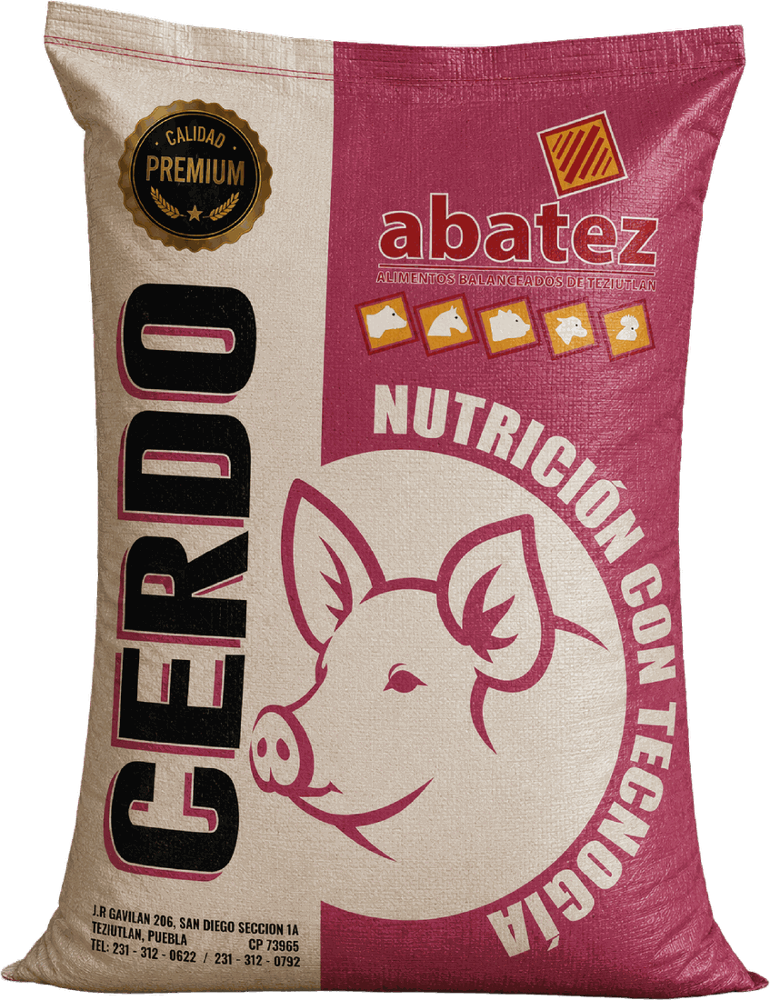

Etiqueta técnica
Porcinos / Crecimiento
Crecimiento
Alimento para cerdos de 30 a 50 kg de peso vivo, pensado para acompañar la etapa de crecimiento.
Uso recomendado
Cerdos de 30 a 50 kg de peso vivo.
Modo de uso
Ofrecer a libre acceso. Ajustar consumo según genética, manejo, clima y objetivo productivo.
Puntos clave
- Enfocado en cerdos de 30 a 50 kg.
- Ayuda a planear consumo aproximado por etapa.
- Permite confirmar disponibilidad y precio rápidamente.
Análisis garantizado
| Humedad | 12.3 % |
| Proteína | 16.6 % |
| Grasa | 4.3 % |
| Calcio | 0.61 % |
| Cenizas | 4.6 % |
| Fibra | 2.7 % |
| Fósforo | 0.27 % |
Fuente de información
Información tomada del archivo de etiquetas de abatez; rangos de etapa complementados con referencia técnica recibida.
¿Quieres confirmar si es el indicado?
Comparte etapa, peso aproximado, número de animales y cantidad que buscas. Con esos datos te pueden orientar mejor sobre disponibilidad, presentación y precio.